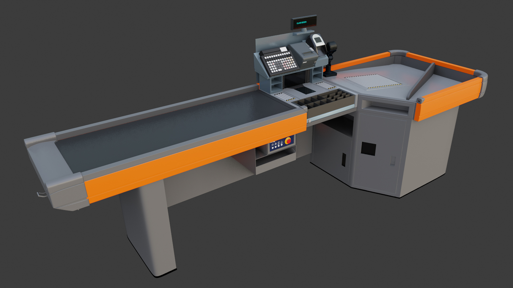
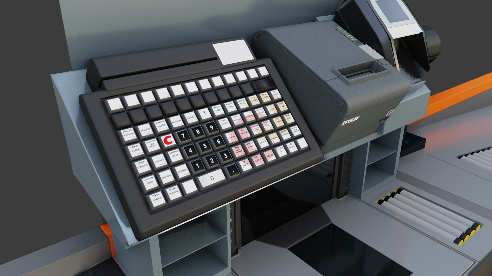
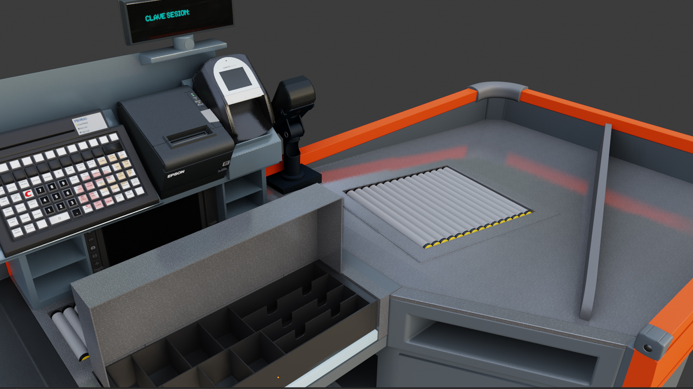
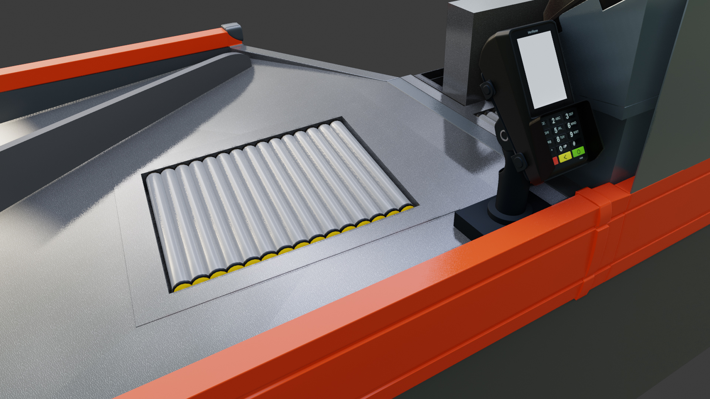

Fase 01
Simulación y contextualización
La información se adaptará a futuras experiencias similares

Una simulación de un entorno comercial pensada para explorar situaciones y tareas mediante una experiencia de realidad virtual.
El desarrollo mostrará cómo se organizan los espacios, se preparan los elementos del escenario y se construye una experiencia visual coherente.
Fase 01
La información se adaptará a futuras experiencias similares

Fase 02
Se utilizarán avatares que simularán las diferentes situaciones reales que podrían darse con los clientes en la caja de un supermercado




Fase 03
Modelados en Blender al más mínimo detalle para proporcionar al usuario una experiencia inmersiva